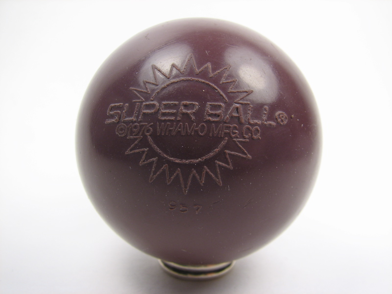

SCP-018

- Item nº:
- SCP-018
- Classe do objeto:
- Euclid
Procedimentos Especiais de Contenção:
O SCP-018 deve ser contido em sua contenção especial de metal dentro de uma caixa selada de 1 m por 1 m por 1 m, revestida com acolchoamento sintético pesado. A caixa selada é então submersa no centro do tanque de contenção de polietileno de 10 m por 10 m por 10 m. Se o SCP-018 se soltar da caixa de contenção, a "gosma" à base de polietileno diminuirá a atividade cinética o suficiente para a recuperação adequada pelo pessoal de contenção. O pessoal que entrar na câmara de contenção do SCP-018 deve usar placas especializadas (encontradas dentro da Observação do SCP-018) e um aparelho de respiração antes de ser baixado no tanque de polietileno. Se o SCP-018 estiver solto fora do tanque de polietileno, o pessoal é aconselhado a se proteger em uma sala separada e fechar portas ou escotilhas para isolar o SCP-018 até a chegada das equipes de contenção.
Descrição:
O SCP-018 tem a aparência de uma Super Ball fabricada pela empresa Wham-O em 1969. Tem seis (6) centímetros de diâmetro e é vermelha. Encontrado quando a empresa ██████████ foi contratada para esvaziar um armazém que continha mercadorias da Wham-O, o SCP-018 mostrou-se capaz de quicar a alturas extremas. Inicialmente considerado um agradável brinquedo infantil, o SCP-018 era capaz de quicar com mais de duzentos por cento (200%) de eficiência (ou seja, se solto de um (1) metro, quicava dois (2), depois quatro (4), depois oito (8), depois dezesseis (16)). A bola logo se tornou um projétil perigoso, atingindo velocidades estimadas em mais de 100 km/h, danificando propriedades e ferindo cinco (5) pessoas na cidade de █████████████. Ela parou depois de vários dias no lago próximo de ████████ e foi recuperada por pessoal da SCP. Devido à velocidade do objeto e à total surpresa das vítimas, nenhuma história de encobrimento foi necessária ou iniciada.
Documento nº 018-04: Mensagem ao O5-█
█████████, espero que esteja tudo bem. Escrevo porque acredito ter encontrado um método mais eficaz para recuperar objetos SCP novos ou fugitivos. Sim, sei que não tivemos nenhum progresso na engenharia reversa do que permite que essa coisa desafie as leis da termodinâmica, mas desenvolvemos um método muito eficaz de integrá-la a um daqueles novos trajes de armadura SCP-A5. Só me escute: nós a implantamos na sola de uma bota, montamos um pequeno dispositivo mecânico e, tcharam, o traje fica capaz de saltar muito acima de um prédio. Além disso, se o usuário estiver com o pé contra algo que quer morto, bem, digamos que isso dá um chute e tanto. Tudo de que preciso é de permissão para modificar um dos trajes SCP-A5 já existentes, e você poderá de fato capturar ████████████, além de quaisquer outros objetos SCP fugitivos. Confie em mim, quando foi que eu o decepcionei no passado?
-Dr. █████████
Documento nº 018-06: Carta ao Dr. █████████
Dr. █████████,
Ao ser designado, o Agente ██████ recebeu sua armadura SCP-A5 modificada para recuperar o SCP-███, e os resultados foram mistos. O Agente ██████ conseguiu colocar a coleira ██████████ no SCP-███, persegui-lo pela Amazônia e contê-lo por desmembramento. No entanto, devido a um mau funcionamento do seu "pequeno dispositivo mecânico", ele foi lançado a quase uma milha de altura e sofreu duas pernas quebradas, sete costelas quebradas, a perda de um braço e uma fratura de crânio ao atingir a água do Lago ███████████ na descida. Você vai consertar isso antes que eu autorize sua armadura para uso geral.
Documento nº 018-11: Mensagem ao O5-█
█████████, não se preocupe, está consertado. Mas tenho mais algumas ideias. Se eu puder receber o uso de um pouco de água do SCP-006, do SCP-███ e possivelmente do SCP-███, posso lhe entregar um conjunto de armadura SCP-A5 e um agente capaz de capturar qualquer SCP fugitivo ou não adquirido, se não todos. Só estou esperando a sua aprovação.